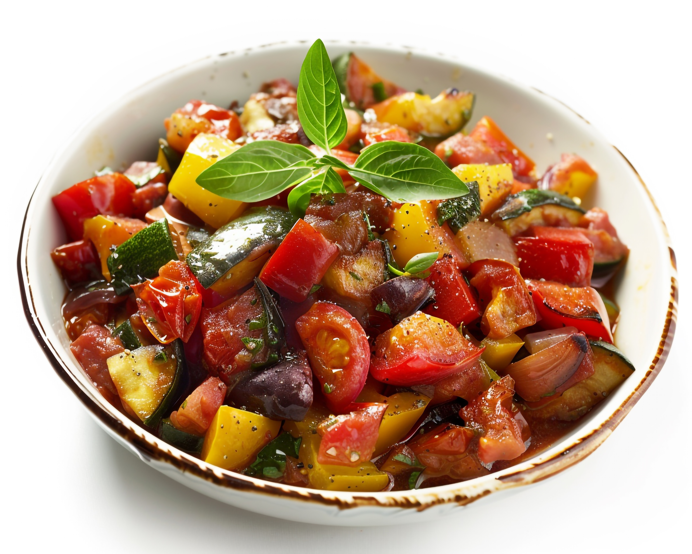

Ratatouille Recipe
This classic French dish is a perfect blend of fresh vegetables and herbs. Here's how you can make it:
First Wash your vegetables carefully
Then cut them as you wish, some home-cooks like to cut them in bite size pieces and put it all in the pot to cook like stew. Others like to slice them, and carefully arrange them in their dis. This part is your choice, it will taste great either way.

Once prepared, you can enjoy with bread or rice

here is a more precise recipe:
Ingredients
- 2 eggplants
- 3 zucchinis
- 4 tomatoes
- 1 bell pepper
- 1 onion
- 3 cloves of garlic
- Olive oil
- Salt and pepper
- Fresh basil
Instructions
- Preheat your oven to 375°F (190°C).
- Slice the eggplants, zucchinis, tomatoes, and bell pepper into thin rounds.
- Chop the onion and garlic finely.
- In a baking dish, layer the vegetables in a pattern, alternating between different types.
- Drizzle with olive oil and season with salt and pepper.
- Bake in the preheated oven for about 45 minutes, until the vegetables are tender.
- Garnish with fresh basil before serving.
Comments